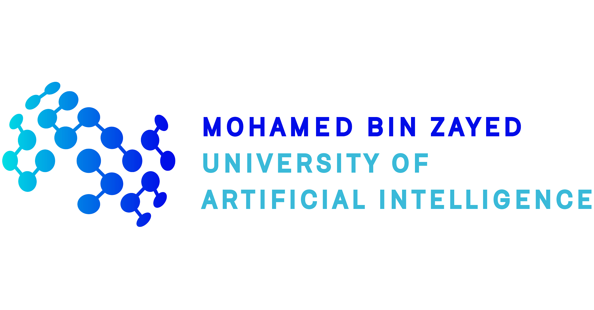
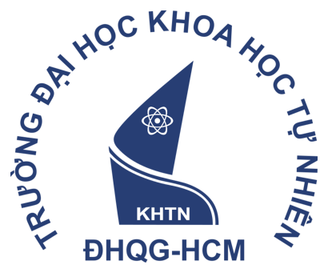
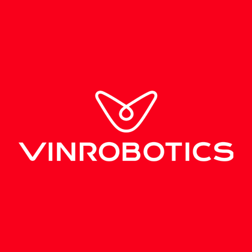
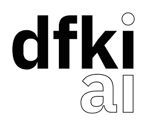

Current

Ph.D. Student
Mohamed bin Zayed University of Artificial Intelligence · Abu Dhabi, UAE
World models, embodied intelligence, and multimodal learning.
Nghiem Tuong Diep

Mohamed bin Zayed University of Artificial Intelligence · Abu Dhabi, UAE
World models, embodied intelligence, and multimodal learning.

University of Science, Vietnam National University Ho Chi Minh City · Vietnam
Advanced Program in Computer Science
GPA: 9.39/10.0 · 3.92/4.0

VinRobotics · Hanoi, Vietnam
Supervisor: An Le and Duy Nguyen
VinUniversity · Hanoi, Vietnam
Supervisor: Khoa Doan
Application Driven Mathematics – VinBigData · Hanoi, Vietnam
Supervisor: Nhat Ho

German Research Center for Artificial Intelligence (DFKI) · Germany
Supervisor: Duy Nguyen
AISIA Lab · Ho Chi Minh City, Vietnam
Supervisor: Binh Nguyen and Duy Nguyen
Reviewer: ICLR 2025, ICML 2026, NeurIPS 2026.